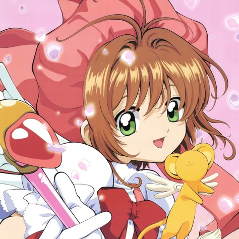
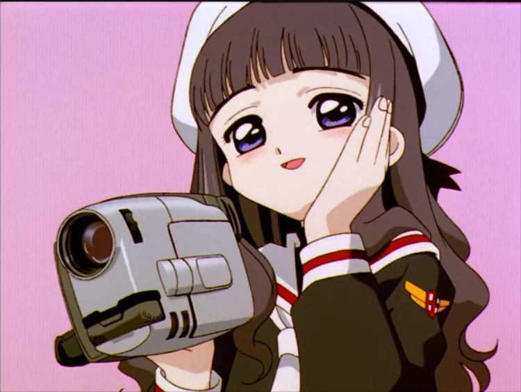
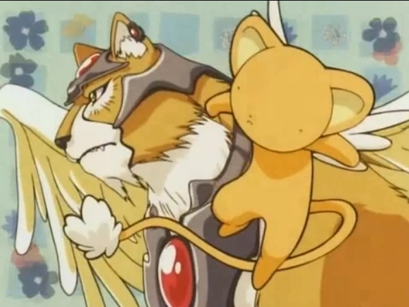

Sakura Kinomoto
Main ProtagonistThe main protagonist of the story, Sakura is now a junior high school student (7th grade) attending Tomoeda Middle School. Still overly optimistic and soft-hearted as ever, she gradually learns to not let her guard down so easily.

Syaoran Li
Sakura's crush and one of her strongest allies; he goes to the same middle school as Sakura and Tomoyo, as he had in elementary school. His magical prowess regarding his sword has grown somewhat since the original anime.

Tomoyo Daidouji
The second cousin of Sakura Kinomoto. She becomes Sakura's primary assistant by designing "battle costumes" and filming all of her magical (and non-magical) endeavors, much to Sakura's embarrassment.

Kero
The sentient and autonomous guardian beast of the book of fifty-three or (nineteen in the manga) pink Sakura Cards (Clow Cards originally). He appointed Sakura the title of "Cardcaptor" in the original series. His magic centers on the Sun, Fire, Earth, and Light.